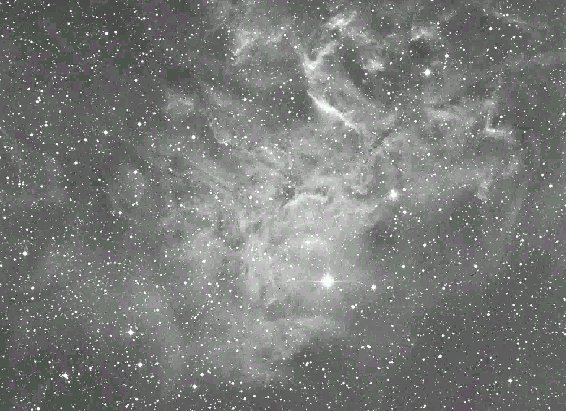

17.5: the "Flaming Star" nebula is a very faint, large, diffuse nebulosity extending mainly N of AE Aurigae without filter. Enhanced with an Hβ filter.
13: nebulosity highly suspected on E side of AE Aurigae. Using an Hβ filter it appears large, about 15' diameter, extends to N and NE of AE Aurigae. - Steve Gottlieb